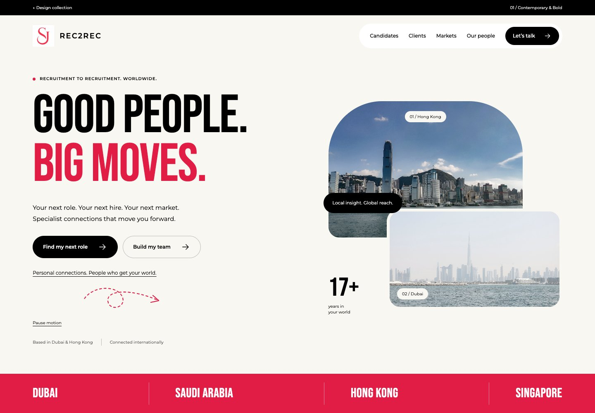
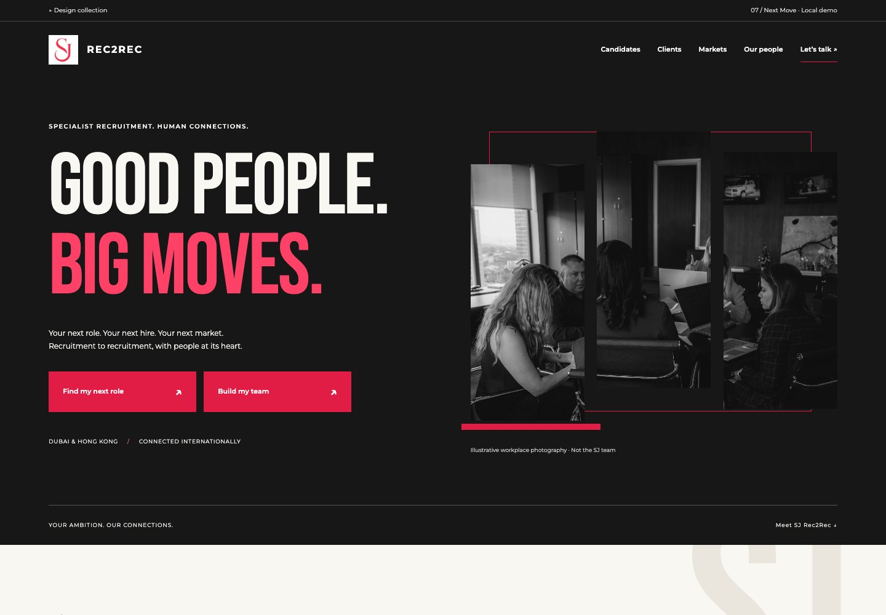
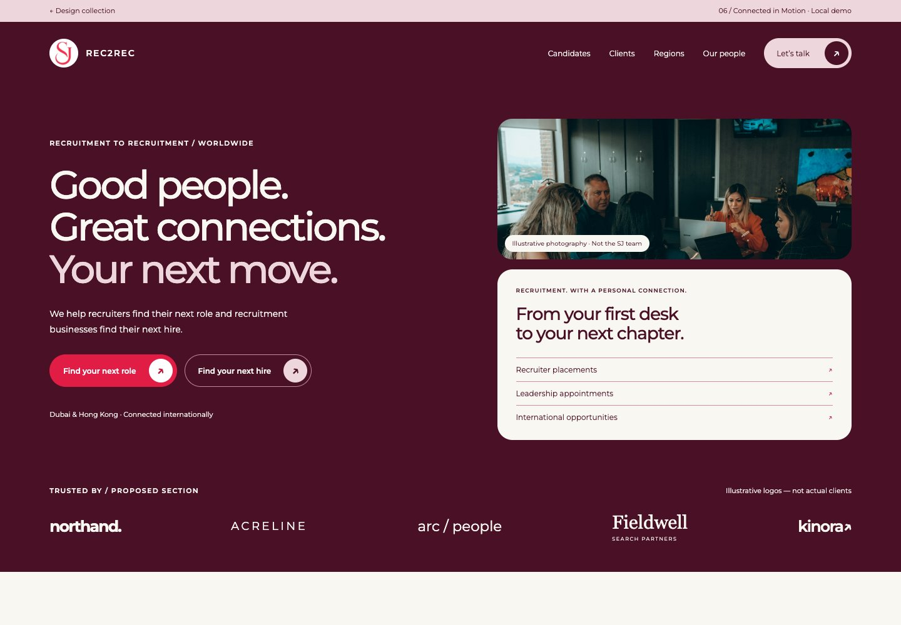
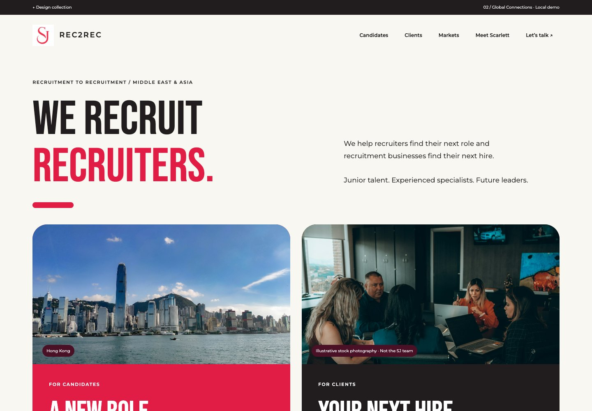
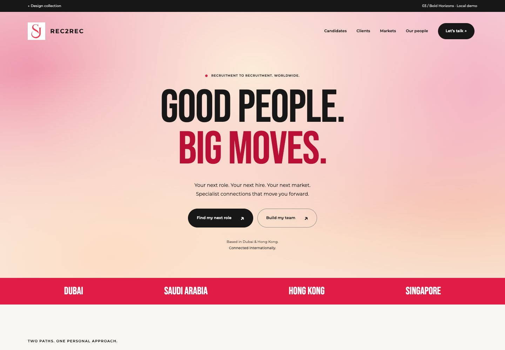
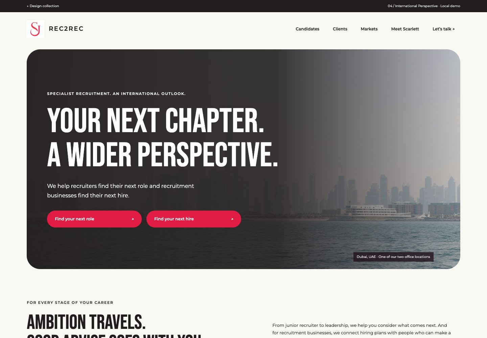
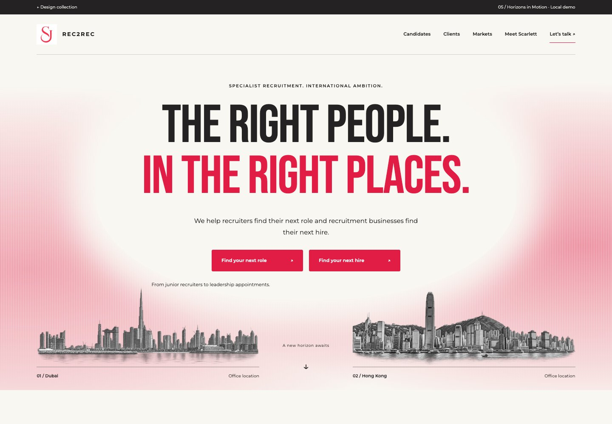

SJ Rec2Rec Design collection
Select a preview to explore.

Contemporary & Bold
Bold typography, layered city photography and portrait details give SJ an energetic, approachable personality. Clear candidate and client actions keep the focus on starting a conversation.

Next Move
Large headlines, layered imagery and an interactive map make SJ’s international reach a central part of the experience. Inspired by Dean James’s bold typography and geographic storytelling.

Connected in Motion
A split opening, rounded panels and gentle motion create a warm, contemporary feel with clear routes for candidates and clients.

Global Connections
Giving candidates and clients equal space makes it easy for each audience to find their next step, while city photography highlights SJ’s markets. Inspired by Fifteen West’s clear audience split.

Bold Horizons
Oversized headlines and a softly shifting colour backdrop give the opening impact while keeping the message easy to scan. Prominent enquiry buttons make the next step clear for both candidates and clients.

International Perspective
Wide city photography and spacious editorial sections give SJ a calm, established international presence. Inspired by Redpath Partners’ restrained photographic presentation.

Horizons in Motion
Engraved skylines and subtle lighting effects give SJ a distinctive identity rooted in Dubai and Hong Kong. The spacious layout balances visual character with clear candidate and client journeys.